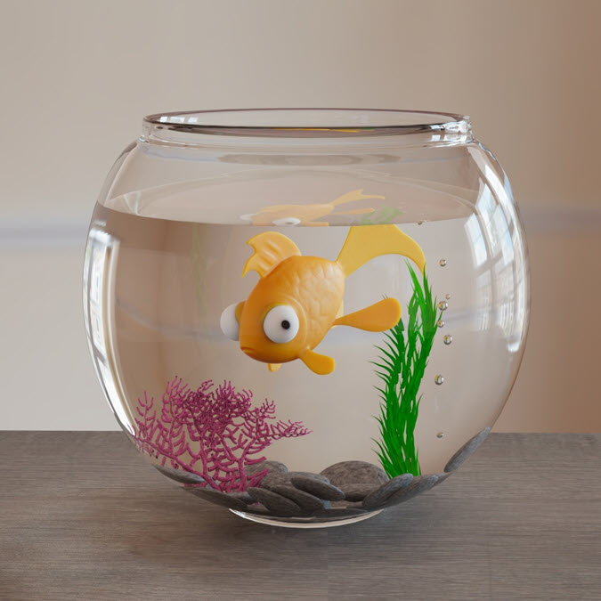

使用 Arnold 渲染折射玻璃曲面时，会面临一些常见问题。在为存在液体-玻璃界面的曲面建模时，需要遵循一些指导原则。问题在于渲染器如何判断我们是射入还是射出物体，以及射入和射出界面是什么。
standard_surface 着色器假设法线朝外，物体包裹在空气中，并且它们之间没有重叠。
我们将展示使用以下不同建模方法得到的结果：
本教程分为以下三个部分：
有关介绍塑料水瓶着色技巧的教程，请单击此处。